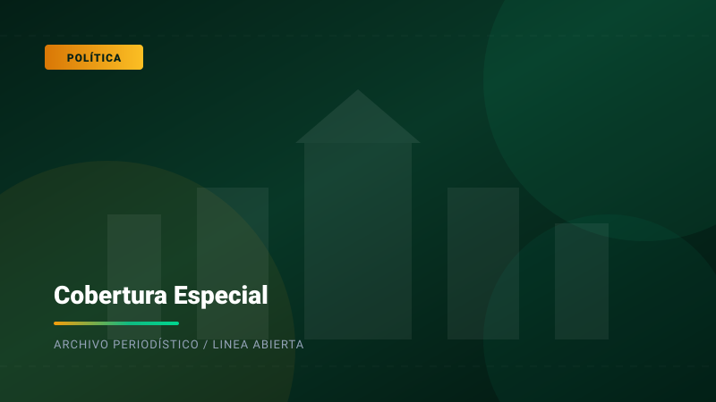

DESTACADOCongreso debate reformas clave para el equilibrio de poderes y el calendario electoral institucional
El pleno del Parlamento abrió debate extraordinario para definir el marco normativo de las próximas reformas políticas del país.